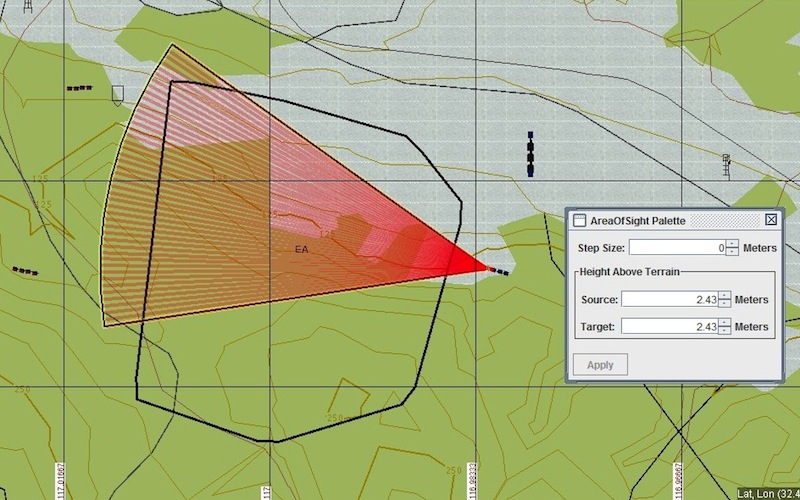
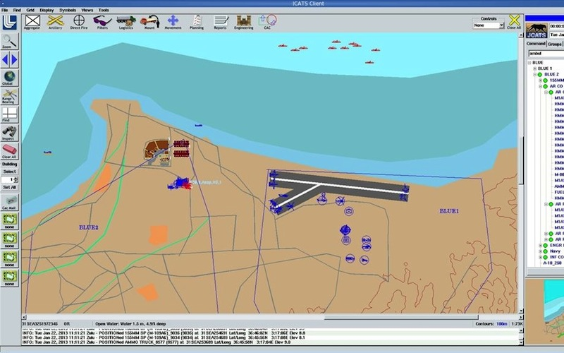

-
X-Plane
X-Plane is the premier flight simulator for personal computers and high-fidelity
simulation systems alike. Offering a highly realistic flight model, X-Plane is a
fully-fledged engineering tool for either fixed-wing or rotary aircraft flight
training and analysis. X-Plane 10 is DIS and HLA enabled via Calytrix LVC Game.
-
VBS2
VBS2 is a first-person, virtual environment supporting individual
and collective training. VBS2 merges mainstream game technology with simulation
and training features and a comprehensive content suite to deliever the
most widely deployed virtual military training environment globally.
VBS is DIS and HLA enabled via Calytrix LVC Game.
-
Steel Beasts
Steel Beasts is a small-unit armored and mechanized combat simulation.
Distinguished from other simulations by a faithful reproduction of tactical
manoeuvres and Fire Control Systems, Steel Beasts provides tactical training
for single-vehicle, platoon and company scenarios. Steel Beasts supports
DIS and HLA via Calytrix LVC Game.
-
JSAF
Joint Semi Automated Forces (JSAF) is a constructive simulation developed
by the United Stated Joint Forces Command (USJFCOM) with the aim of providing
a high fidelity entity level simulation to support training and experimentation.
JSAF is HLA-enabled natively and includes a DIS bridge.
-

OneSAF
OneSAF is an entity-level, brigade-and-below constructive simulation system
developed by the US Army. It is designed to support a variery of needs
including training, experimentation, analysis, mission planning and rehersal.
OneSAF is distributed and supports DIS and HLA operation.
-

JCATS
JCATS is an entity-based constructive sim used in command-post level
training and analysis. Like JSAF and OneSAF, users can create and command
semi-automated computer generated forces backed by high-fidelity models.
Developed at Lawrence Livermore National Lab, JCATS is both DIS and HLA enabled.
-
Havok Vision
Joint Semi Automated Forces (JSAF) is a constructive simulation developed
by the United Stated Joint Forces Command (USJFCOM) with the aim of providing
a high fidelity entity level simulation to support training and experimentation.
JSAF is HLA-enabled natively and includes a DIS bridge.
-
Unity
OneSAF is an entity-level, brigade-and-below constructive simulation system
developed by the US Army. It is designed to support a variery of needs
including training, experimentation, analysis, mission planning and rehersal.
OneSAF is distributed and supports DIS and HLA operation.
-
The CryEngine
JCATS (Joint Conflict and Tactical Simulation) is an entity-level constructive
simulation used in command-post level training and analysis. Like JSAF and OneSAF,
users can create and command semi-automated computer generated forces backed by
high-fidelity models. Developed at Lawrence Livermore National Lab, JCATS is
both DIS and HLA enabled.